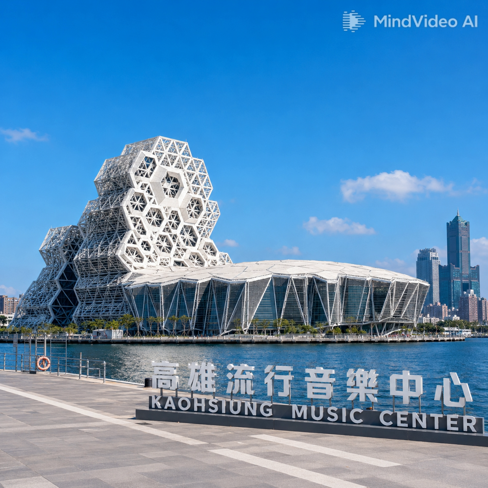

About Kaohsiung Music Center

座落於高雄港 11–15 號碼頭（真愛碼頭、光榮碼頭），佔地約 11.89 公頃。由西班牙建築師 Manuel Alvarez Monteserin Lahoz 與台灣翁祖模建築師事務所聯手設計，以「海洋」為核心語彙，打造出音浪塔、鯨魚堤岸、珊瑚礁群、海豚步道等造型前衛的建築群，2021 年正式開幕後旋即成為港都最耀眼的門戶地標。
從新十大建設到南台灣音樂重鎮
行政院核定「新十大建設」，南部流行音樂中心列入規劃
更名「海洋文化及流行音樂中心」，遷址至高雄港 11–15 號碼頭
國際競圖由西班牙 Lahoz 團隊獲首獎，三月簽約
第一、二階段工程陸續動工、竣工，總經費約 69.56 億元
正式開幕，總統蔡英文、市長陳其邁揭幕；同年舉辦第 12 屆金音創作獎
推出常設互動展，全年超過百場演唱會，成為南台灣音樂重鎮
以海洋為母題的建築群
六層樓高、高度約 42 公尺的主場館，外觀以波浪造型曲面玻璃構成，白天捕捉光影變化、夜間配合 LED 燈光演出。內部設有台灣首座 3D 沉浸式音響系統的海音館。
六棟獨立展演空間（200–1,000 席），屋頂曲線如鯨豚浮出水面。進駐電競館、沉浸式劇院、原民主題餐廳等多元業種，形成複合式藝文聚落。
以珊瑚礁有機輪廓為靈感的商業空間，連結遊艇碼頭與水岸步道。採低密度開發，保留開闊視野，讓海風與綠意貫穿園區。
沿高雄港岸線鋪設的景觀步道，串聯真愛碼頭與光榮碼頭。沿途設置休憩平台、裝置藝術，可近距離欣賞港區船舶與夕陽。
大型戶外演出場地，可容納 8,000–10,000 人。以弧形草坪與階梯座椅構成，面向高雄港主航道，觀眾可在海風吹拂下享受音樂盛宴。
串聯駁二藝術特區、高雄展覽館、新光碼頭，形成長約 3 公里的水岸文化廊帶。輕軌真愛碼頭站與光榮碼頭站貫穿園區，交通便捷。
如何抵達高雄流行音樂中心
C11 真愛碼頭站、C10 光榮碼頭站，出站即達
紅線 R8 三多商圈站 1 號出口轉紅 18；或 R9 中央公園站轉 100 號公車
大成街口（11、25、33、50、214A/B、0 南北）；高雄女中（77、168 環狀）
珊瑚礁群、音浪塔、LIVE WAREHOUSE 旁皆有站點
真愛路停車場 239 格、海邊路停車場 24h